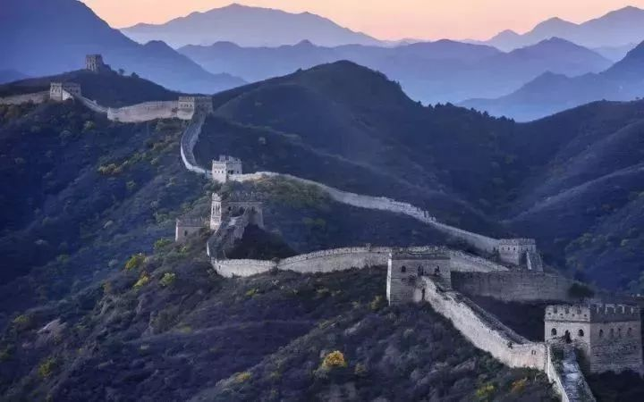

王沪宁：中国的未来走向
来源：本文原载于《复旦大学（社会科学版）》1988年第3期
当代政治学受世界一体化进程的推动，日益认识到不同社会和不同民族文化差异的政治意义。自然障碍的逾越，人为藩篱的冲破，排外心理的消除，是文化因素走入政治科学殿堂的阶梯。
本尼迪克特对日本文化的研究，可以视为这个过程的起步：人类社会必然会为自己的生活作出某种设计，它会赞成某些应付事态的方式和某些估量事态的方式，生活在那个社会中的人们把这些解决问题的方法视为整个世界的基础。
今天，人们比以往任何时候都更加清楚地认识到，政治生活不单单由诸如制度、体制、权力、规范等“硬件”构成，还有“软件”亦即潜在的或内在的命令，如价值，感情、心理、态度等。
政治文化分析恰恰是适应人们的这种认识要求而生的。中国政治正处在变革之中。在这种情势下，审视其政治文化的历史结构和因素结构，历时性结构和共时性结构，既存结构和发展结构，很有必要。
1
中国政治文化历来是一种“文化中轴的政治文化”，它异于西方“制度中轴的政治文化”。所谓“文化中轴的政治文化”，指的是政治文化本身与家庭生活、社会生活、道德生活和伦理生活有着千丝万缕的联系，政治文化弥散在更宏大的社会文化之中。社会通过一定的文化机制和一定文化形态下形成的主体文化沉淀作用于政治生活，社会生活和伦理生活的展开便是政治生活的实现。
“制度中轴的政治文化”则较为明确地划分政治领域和上述其他领域，更多地肯定了主体在不同领域中的不同身份。建立了政治生活特有的程序、机制、功能和结构。近代以来，中国政治文化古已有之的结构多次遇到冲击，起伏跌宕，既有域外文化的渗入，又有内部文化的嬗变，但其主体精神却难说有根本的改造，“文化中轴的政治文化”依然是认识中国政治生活不可或缺的维度，也是人们构划政治体制改革时不应抛开的基础。
“文化中轴的政治文化”也罢，“制度中轴的政治文化”也罢，均不是人们随心所欲选择的结果，而是一定社会发展水平、一定社会结构、一定主体的精神状况等因素交互作用的结果，亦即汤因比所说的，人类社会的规范、风俗、习惯是互相关联的，形成了一个网络，制约人类生活各个领域的规范，也许彼此间并无逻辑上的关系。但是，……这种意义上的心理联系显然是存在的。
社会演进往往是缓慢的，其表层有时虽然可以在几年或几十年中间变得面目全非，但社会关系的深层变化却小得多。因此，细察中国社会之状况，应当将历史—社会—文化条件与其联在一起，舍此不行。
由此可以认为。无论是考察今天的中国社会政治发展，还是分析历史的沿革，政治文化的作用都不可低估。
近代以来，中国政治走上从“文化中轴的政治文化”向“制度中轴的政治文化”过渡的漫长道路，但目前中国政治发展的主要轨道仍没有超出这一历史进程；准确地说，近几年的变革，是这个漫长过程中节奏最快的时刻。现今中国社会的政治文化已处在转变之中。
从社会发展来说，中国社会正在从政治动员型社会走向经济动员型社会，从产品经济走向商品经济。
政治生活只是社会生活中的一个结构，或曰一个系统，在大系统发生变化时，政治会发生两个方向的变化：一是随历史—社会—文化的变革而变革，从而适应并推进社会变革；二是超越经济社会变革的现有限度，超前转变，成为执导社会经济变革的观念和心理力量。无论是哪种方向，都离不开一定的政治文化的辅佐。
政治文化的力量是潜移默化的，又是强大有力的。如果我们把社会政治生活比喻为辽阔大海上的冰山，那下面庞大的部分便是社会的政治文化。美国学者S.N.艾森施塔特说，至关重要的是要把政治过程与社会文明更广大的背景结合起来，文明设定政治过程，政治过程在文明中发展成长。在中国特定的文化背景下，政治文化的功效尤为显著。这一则出于政治文化的发达，另一则由于社会对政治文化的认同。
根据中国公民政治心理调研组从3204份问卷的749万个数据的分析（1987.8），中国社会公民的政治敏感性层次很高。在被调查对象中，有83.51％的公民认为应当关心国家大事，有77.67％的人对政治局势的稳定和局部波动表示“非常留心”和“比较留心”，有57.01％的公民表示具有某种政治信念，有49.13％的公民认为应当不顾一切地为自己的政治信念进行奋斗，还有56.99％的公民表示愿意谈论政治问题。
这些数据并没有揭示公民政治文化的具体构成和具体内容，但它们显现了政治文化可以产生的作用。由于长期的文化熏染，中国社会大众的政治敏感性很高，这种敏感性因现代政治的发展空前强化，反过来又构成“文化中轴的政治文化”得以存在的一项条件。
美国著名政治学者罗伯特。达尔在分析“政治人”的概念时，曾区分了无政治阶层、政治阶层、谋求权力者、有权者等不同范畴，以分析他们在政治生活中扮演的不同角色。用达尔的概念似乎还不宜对“文化中轴的政治文化”中的人做分类，因为他根据人们对制度的态度和关系来分类。在中国，大部分人都属于文化政治阶层，这一特征决定了政治文化在中国政治生活中的基本作用。
文化政治阶层本身是个成份复杂的整体。不能一概而论。但文化政治阶层与制度政治阶层（达尔意义上的政治阶层）大为不同，起的作用显然也不同。制度政治阶层主要是依其对政治过程的参与而判定和划分的，也就是“确实去参与政治生活”。而在中国的文化氛围中，政治文化的效能和力量来自大众的认同或不认同，感应或不感应，纳入或不纳入，而非一定要身体力行。
不难看出，这既是文化特征，又是体制特征，既是功能特征，又是结构特征。此间得出的政治文化转变的重要性只是初级产品。高级产品是什么，值得深长思之。

2
政治文化是一种无边、无形的存在，不可能象有边有形的实体那样可以加工铸造。它的形成和转变都需要一个过程。作为社会文化的一个部门，政治文化与社会文化的发展具有共同性，不言而喻，政治文化发展首先也是一种历时性的过程。政治文化是较为宽泛的概念，不同的学者对它有不同的规定。阿尔蒙德提出，政治文化是一个民族在待定时期流行的一套政治态度、信仰和感情，这个政治文化是由本民族的历史和现在社会、经济，政治活动过程中形成的。
一般认为，政治文化包括政治认识性成份、政治情感性成份、政治价值性成份和政治理想性成份，由它们聚成一个整体。这些成份都需要一个历史的加工、提炼、凝固和溶化过程。因此，剖析中国政治文化的转变，首先要考虑政治文化的历时性结构，这是解析当代政治文化的历史背景。舍此，既把握不住当代政治文化与传统政治文化之间的亲亲血缘关系，也把握不住当代政治文化转变的幅度及历史动因。
分析当代中国政治文化的历时过结构，以下变量是不可不选择的：
第一，古典结构，即中国传统文化中政治文化的基本内容和基本精神。中国传统政治文化重心性、重伦理、重修身、重至善、重道德。因而政教不分，政学相同。西方政治文化重社会、重法制、重权力、重制约，因而政教相分，政学相分。西方政治文化形成的“集体无意识”是重外部调节，即通过一定的政治制度、权力关系、权力运用、法律制度等机制调节人的行动，达到政治目的或政治理想。中国政治文化铸造的“集体无意识”则强调仁义礼智信，忠孝悌恕勇，天地君亲师，格物致知，诚意正心，修身齐家治国平天下，强调通天人一内外，内圣外王。
在这种精神主导下，则有忠君、草民等种种观念萌发。由于古典政治文化的精神未易，其具体成份也难变。儒家以追求人性为基本，治平为标的，追求“广大悉备，图融和谐”，使政治文化乳化在整个文化之中，界限不明。这既压抑了政治文化的成长，又巩固了政治文化。当然，政治文化中的古典结构，是历史选择过的结构，不能简单地将以往的东西完全加之于今天。古典结构只是当今政治文化的一分子，若用它来解释和透视整个中国政治文化。是不公允的。古典结构包含的具体成份也在演化之中。
第二，近代结构，即近代以来维新变法、批判传统文化所形成的结构。这个结构的形成过程始于鸦片战争，直至五四新文化运动达到高点。五四运动否定传统，追求西方文化，诚如李泽厚先生所言：这在中国数千年的文化史上是划时代的。实际上，近代结构与古典结构是认识论上的两极。现代结构的内在意义在于西方民主主义文化，在于洛克、孟德斯鸩、卢梭、潘恩、杰佛逊等人提倡的自然权利、主权在民、社会契约、权力分立等观念。
这些观点与古典结构的精神是相悖的，它们之间有着长期、激烈的较量。应当说，经过将近一百五十年的消长，近代结构的存在已很确定，至少在具体成份上，它是压倒古典结构的。可以看到，近代结构有其历史局限性和地理局限性，从更高的理想追求来说，它也有原则上的局限性。这同其产生的渊源有关。但这一结构是近代中国没有达到的境界，故特别具有吸引力。
第三，最近结构。即1949年以后在马克思主义和社会主义指导下形成的政治文化结构。它较为年轻，且自身变革和改造最多，其形成和发展与中国的新民主主义革命和社会主义革命相辅相成。也与“革命后社会”的特性有关。按理，最近结构可以超越古典结构和近代结构，但由于中国社会的特定状况，前者无法一蹴而就。一越而过，往往与后两者交织在一起，形成一种复杂的实态。
最近结构以马克思主义政治价值观为主导，以超越近代结构为目的，更不去言古典结构。然而，最近结构需要一定的社会经济条件才能超越，这也是当时设计者立论的基础。这一点在从半殖民地半封建状态中脱胎出来的社会主义中国还不具备，加之旧的结构所依赖的社会经济关系和人伦关系尚未彻底改变，最近结构虽然成为主导，可并没有全然排除其他历时性结构，有时往往还会遇到它们的严峻挑战。交锋的结果是最近结构被高度强化，其中最激烈的成份被扩大，以压倒其他结构。这个过程是必然的，也是实际所要求的，因为不如此，新的制度就有可能站不住脚。但是，强化在客观和主观因素的作用下走向了极度。反而破坏了自己的存在。“文革”便是这种演变的结果。“文革”实质上是最近结构的一种更替。“文革”形成的政治文化成份脱开了其产生的母体，也脱开了社会需求和社会价值体系。“文革”之后，又发生一次更替，“文革”结构被从原则上否定，建设起来的结构一方面是对“文革”前结构的恢复，另—方面是对社会政治经济文化发展需要的判明和适应。
因此说，最近结构既形成了又没有形成。说其形成，是因为它也有几十年的发展历程了；说其设有形成，是因为自我否定不断，还在寻求自已的血肉之躯。任何政治文化的成份都是不断衍生、不断变化、不断升华的，不能希望转眼之形成一种政治文化形态。不过，最近结构的否定之否定，的确值得注意，它会对社会政治生活和大众政治心态产生重要的影响。不能忘记，最近结构是中国政治文化的主体结构。
从历史演进观之，近代以来，中国政治文化始终在不断地自我更新或自我否定。每一个历时性结构都意味着对前一种结构的否定或批判，结局是没有形成较为稳定的价值系统。每一种新的价值系统还没有渗透社会政治文化的土壤就被淘汰了。政治文化的更新与新价值系统的形成关系密切，尤其与新价值系统的社会化有关。新的价值系统渗透政治文化，并能够驱逐旧的价值系统，支撑新的政治文化，需要相当长的时间。一种价值系统只有成为帕斯卡尔所言的“第二天性”，才真正坚实稳固。
世界上具有这一条件的国家并不多见。西方发达国家从文艺复兴开始形成新的价值系统，大约经过三百年左右的时间才完成社会化的过程，近代以降，中国政治文化的价值系统大约处于五十年来一番彻底改造的节拍中，古典结构往往潜在地、不声不响地延续下来，乃至进入后两个结构，而由社会变革或历史运动推动的价值更新，却不合人意。这是中国政治文化转变时期重要历史参据。其中更为根本的原因应由深奥的哲学思辨来分析，不属本文范围。

3
政治文化除有历时性结构的一面，还有其共时性结构的一面。从某种意义上说，共时性结构的作用更至关重要。历时性结构最终会加入共时性结构，成为共时性结构的组成分子。
自然，在文化意义上，共时性结构的每一部分均有其历时性，沉积的历时性结构也都会表现为共时性结构。当代中国政治文化的这种征状尤为明显。因此，言转变中的中国政治文化结构，必须言其共时性结构。共时性结构表示着一种因素组合关系。每个因素自身在变化着，这些变化一方面改变着政治文化中各种成份的关系，另一方面催促着社会政治文化的转变。
共时性结构的解剖颇为复杂，甚至可以说是不可能完善的。政治文化的弥散性，使其具有较大的模糊性。加之政治文化包括的面较为空泛，因素结构的分解很难。转变中的中国政治文化具有异常繁杂的共时性结构，在中国社会大幅度变革的推动下，各种因素都在或多或少地发生转变。
粗线条地看，历时性结构的沿革已使我们得以确定传统政治文化的存留、近代政治文化的成分和最近政治文化的要素这样三个大块，它们实际上相互作用着、较量着又相互补充着，是目前政治文化的主干。这只是概而论之。
政治文化的差异还要包括世代之间、男女之间、城乡之间、阶层之同、团体之间、民族之间的差异；包括政治认识、政治情感、政治价值和政治理想之间的吻合与分歧；包括人们对政治权力，政治体制、政治结构、政治功能和政治产品的偏重和评价等等。平心而论，政治文化是—个捉摸不到的对象，因为它太广大无边。这的确是政治文化分析的一大难题。然而，做理论上的设计还是有益于分析问题的。大体上，可以将政治文化的共时性结构分在以下框架中。
第一，因素结构，如政治文化所包括的各类性质的构成因素。因素结构本身是多层次、多向性的。因素结构可以是传统政治观念、近代政治观念、马克思主义政治观念以及中国社会实际形成的政治观念，由此产生的心理、情感和理想也与之相应；也可以是价值体系的不同组成因素。
第二，群体结构，即由于某种条件而形成特定界限的群体的亚政治文化。这可以由职业、教育水平、社会地位、种族、语言、年龄等来划分。我们可以从表一看到年龄差别对人们政治观念的影响。群体结构是政治文化中动态的结构，也是载体结构，因素结构只有与它复合起来才有意义，下面讲的功能结构和地理结构也相似。
第三，功能结构，即围绕政治体制的各种功能而产生的亚政治文化，如对政治体系领导功能、行政功能、决策功能、扶助功能、发展功能、立法功能、管制功能等特殊领域的认知、感情和评价。这部分亚政治文化往往制约政治体制的功能选择和功能分配，直至制约政治活动的样式。从表二可以看出这方面的差异性。我们在转变政府功能上（变直接管理为间接管理，变微观管理为宏观管理，变行政干预为法律调节等）遇到了种种困难，其中就有功能亚政治文化的错位问题。一旦政府功能变革了，人们长期形成的对政府功能的观念如不及时加以调整，就会成为制约力量。当然。功能变革本身总会推动亚政治文化的转变，只不过不那么迅速。
第四，地理结构，即因地理位置不同、从而因经济发展水平和风俗习惯的不同而产生的亚政治文化。在中国，这层亚政治文化结构尤为错综复杂，民族区域之间的政治文化差异、城乡之间亚政治文化的差异、东西部之间的亚政治文化的差异，尤其是乡土政治文化的分析和转变，都令人注目。中国有百分八十的人口在农村，所以政治文化的大部分载体在农村。由于经济长期不发达。商品经济始终未能搅动这潭静水。这里的传统结构尤其坚固、耐久。
费孝通先生所分析的“乡土中国”，所谓的“差序格局”、“家族、”男女有别“、”礼治秩序“、”血缘关系“依然存在，只是程度不同罢了。这潭静水随着近年来承包责任制、开放搞活和商品经济的到来而开始发生变化，但有时又往往表现为一种新形式与旧成份的畸形成长。甚至可以说，在许多遥远的乡土文化中，还没有形成现代的政治意识和政治概念，现代政治语言包罗的是乡土家族文化和亲缘文化的内容，与城市政治文化有较大反差。中国乡土政治文化这个大头长期没有得到真正的开发，现在只能说开始转变。除此之外，其他的地域结构也在转变中。
以上只是粗略的分析，况且只是一种分法，政治文化成分和因素五彩缤纷，任问分类都只能是理论的说明，而非事实的摄像。这四种共时性结构你中有我，我中有你，相互渗透，相互包含，作为一个系统综合地发生作用。
强调共时性结构，就要强调它们处在转变之中。中国政治文化正在发生深刻的转变；政治文化中传统的、保守的、封闭的、集中的、主观的、武断的成份正在向新型的、开放的、分散的、客观的、民主的成份转变⑿。这场转变既是历史转变的继续，又是新转变的发韧。当代中国政治文化有着玄远的历史动力。它是近代以来中国政治文化转变的继续，是对古典、近代和最近的历时性结构的超越和扬弃。这场转变有着深刻的社会、经济和文化原因。它首先发源于革命后社会本身的转变。我曾提出现阶段革命后社会发展的一般趋势是：
思想路线经过总体性革新；
现代化建设成为社会主义主体工程；
市场机制作为计划经济的辅助手段；
政治生活走向制度化和法律化；
传统的各项体制经过改革逐步让与新的体制；
与外部世界发生了全方位的联系；
民主观念和民主权利得到充分的肯定；
现代化科学技术的全面开发和应用；
文化艺术教育的全面展开；
社会全体成员能动精神和创造精神的积极焕发。
总体的现实社会变革，必然会影响政治文化的转变。今天，中国政治文化转变的动因在改革和开放。改革和开放孕育新的政治文化成分，新的政治文化成份又可滋润改革和开放。这也是马克思所言：“物质生活的生产方式制约着整个社会生活、政治生活和精神生活的过程。”，不过，新政治文化成分的生长一般均较为缓慢，在其没有接替旧成份之前，既存政治文化的相当成分往往起制约或抑制的作用，而非促进作用。
当代政治文化的转变除经济社会的推动外，本身又与社会文化处在共同性结构之中。近十年来，中国社会文化处在快速的转变之中，归纳起来，这场转变大致有下述十个特点；
从革命性文化转向建设性文化；
从政治倾向文化转向经济倾向文化；
从整体性文化转向个体性文化；
从单一维度文化转向多样维度文化；
从精神偏重文化转向物质偏重文化；
从原则论证文化转向操作论证文化；
从目标分析文化转向过程分析文化；
从理想描绘文化转向现实描绘文化；
从单渊源文化转向多渊源文化；
从衍生性文化转向创新性文化。
这是些高度提炼的表述，每一个命题都有丰富多彩的内容，这里无法展开论述。中国政治文化的转变也具有上述特点。社会文化的转变作用于政治文化的共时性结构，不过，政治文化的不同结构并非均衡地受到压力，它们各自的转变速度和幅度不尽相同。各类亚政治文化在转变速度和辐度上的差异性，是转变中的中国政治文化的一个重要特点。

4
综合中国政治文化近代以来的演化，基本上是这样一个过程，即从“文化中轴的政治文化”向“制度中轴的政治文化”转变。这个过程不断地被政治、社会和文化的变故打断，又不断地但缓慢地进行着。二十世纪以来，这个转折尤为突出。产生这种转折有多种原因，西方社会经济、技术、科学、文化的“示范”效应首当其冲。
明显的是，向“制度中轴的政治文化”转变，并没完成，处于逐渐递进的过程。在许多情况下，“制度中轴的政治文化”只是一种向往或理想，现实进程更为蹒跚。“文化中轴的政治文化”扎根于中国历史—社会—文化的深厚且肥沃的土壤，不可能轻而易举地被变革，而只有现实变革了，它才会发生变革，而且这种变革往往不同步。
伴随着这个进程，是本土政治文化结构一而再，再而三有力地表现出来。近代至今，中国政治文化的主体结构遇到几番彻底转向。近代结构对古典结构的否定，首先使千年沿袭的价值系统受到威胁，新的价值系统开始移植进政治文化，生长发育，形成“文化中轴的政治文化”和“制度中轴的政治文化”的双重价值系统。更大的转向发生在社会主义制度建立之后。近代结构基本上基于西方近代民主主义的价值系统，它本来与中国社会的人伦秩序和社会秩序就有距离，所以根基不牢。
最近结构是近代结构所依赖的价值系统的对立物，逻辑的结果是对近代结构的否定。于是，中国政治文化具备了三重价值系统。其中最近结构的价值系统排斥其他两者。最近结构发展，由于种种原因，走向片面，发展到极端，偏离了马克思主义的价值系统，在心理深层和意识深层为极“左”思潮及实践创造了氛围。这套偏向的价值系统通过政治权威和强制逐步建立起来，曾在中国社会发生过举足轻重的影响。所以，“左”的思潮以至十年动乱，不仅有体制的原因，更重要的是有适应助长它的文化氛围。这应是最有启发的历史教训。
1949年后，近代以来从“文化中轴的政治文化”向“制度中轴的政治文化”转变的步伐放慢了。除了人们主观上否定以西方民主主义为基础的价值系统以及它不适应于社会主义制度的重要原因之外，还有更为神奇的原因。深究之，西方民主主义源于法学世界现，即将国家与法规视为社会的主导力量和决定因素，这和它从封建社会产生的条件有关。马克思主义不同于法学世界观，它是一种社会学或经济学世界观，即注重市民社会以及这个社会的内在机制和内在关系，注重生产力和生产关系所表现的社会形态，政治和政治文化被确定为受前者制约的因素。
马克思主义在西方民主主义的基础上超越这种价值系统，从更广阔的层面改造社会，推进人类生活，力图通过变革广义社会文化（包括经济文化和生产文化）变革社会。在这里，跨过一级台阶就可能产生迥然不同的结局。中国社会主义革命确定了马克思主义的统治地位，另一方面中国并没有马克思主义力图超越的那种价值系统。出乎意料的是，“制度中轴的政治文化”被无意地制止了，而“文化中轴的政治文化”却获得了意想不到的发展环境，继续生长，甚至介入马克思主义政治文化的价值系统，表现为一些奇特结合与联体。一些古典结构的东西挣脱了近代结构对它的压抑，变换形态在可能的空间复生。
制度因素不发达，社会有序就得依靠文化，这是非常现实的，并非有意识的选择和设计。这一历史跨步一方面使人们越过了反对封建主义的阶段，另一方面也使人们超过历史条件追求未来社会的价值系统。只有经过了历史考验和现实的风风雨雨之后，人们才清醒地认识到政治文化建设上应何去何从：其一是根据中国社会的实情确定立场，社会主义初级阶段理论是合乎实际的定位；其二是清除封建主义残余，也就是邓小平同志所言，现在应当明确提出继续肃清思想政治方面的封建主义残余影响的任务。
近年来，中国政治文化进入最有意义的转变时期。这场转变的动力来自中国社会政治、经济和文化的转变。既存的经济、政治和文化体制得到或面临全面的改革。文化形成体制，体制也可形成文化。三十多年来高度集权体制形成的文化氛围在这场改革中必然会转变。政治体制的改革更为直接地推动了政治文化的转变，思想解放、民主体制的健全、民主政治目标的确定、教育发展、文化开放及许多具体制度的建设助长了政治文化的转变。这场变革的意义不亚于以前的变革。只不过它刚刚开始，至于结果如何，还有赖于具体进程。
在社会主义初级阶段理论的基础上重新确定中国社会的各项生活原则，意味着对以往主导原则的再检讨。从政治文化的角度看，也是一种再造。这便是政治文化的转变。这场转变较为全面、深刻、彻底，原因有二：一是对1978年前形成的极“左”政治文化价值系统的否定，二是对整个最近结构的再检讨。在既存体制尤其是政治体制发生转变的条件下，政治文化的转变是必然的，在某种意义上，它恢复了向“制度中轴的政治文化”的演进。目前中国的政治体制改革以变革和健全体制为目的，与以往以思想改造为主的政治发展途径不同。当然，究竟哪一种更适应中国社会，则是一个有待探讨和实践检验的问题。
中国政治文化处在转变之中，过去的成份正在消失或应当消失，新的成份正在产生。处在这样一个转变阶段。就会具有许多转变初期的特点。其中最根本的是作为政治文化核心的价值系统在辞旧迎新，旧的被否定了，新的正在形成。
目前转变中的中国政治文化的总体特征是：
1、政治敏感性高。这是由长期的熏陶培养出来的。一项民意调查统计表明，参加调查的94.22％的公民赞成“国家兴亡，匹夫有责”，54.14％的公民对自己生活在社会主义国家感到骄傲，分别有74.95％和85.65％的公民对“如果国家使您失望，您就有理由不爱她”和“如果国家使您失望，您就有理由背叛她”表示反对⒃，表现出中国政治文化中强烈的“恋国情结”。
2、政治认同低，虽然政治意识高，但对政治体系和政治价值系统认同不高，这是因为这两者本身就处在变化之中。表三和表四证明了这一点，认为要改革政治体制的在表三中达72％，在表四中达66％。表五表明了公民对政治领导的看法，认同水平也不高。这里有一种悖论：一方面长期培养了公民的高度政治敏感性，另一方面又缺乏认同对象。这一矛盾可以用来解释许多现象，以及一些政治心理上的浮躁和行为骚动。这也是转变时期不可避免的。关键在于要充分认识这个情况，以促进政治文化的转变。
3、政治知识差。政治知识指对政治权力、政治体制、政治规范，政治功能等的认识。由于政治文化本身始终处在转变之中，严格的、科学的政治知识正在孕育，政治知识差可以想象。以往的政治知识已不适用，也是原因。另一个原因在于政治社会化程度低，表六显示了这一点，知道宪法的达75.15％，但了解最清楚的只有1.60％。在其他各个方面，情况也不例外。这种状况显然不利于政治文化乃至政治的发展。
4、政治感情淡，即公民对政治体制或政治权威的归属感、眷恋感淡薄。由于一度的政治动乱和政治体制的自我革新，人们一般对政治体制持批评态度。这是政治文化转变时期的必然现象，表三、表四、表五均反映了这种倾向。另一项抽样调查显示，被调查的人74.4％认为没有政治民主，即使经济搞上去了也不能算真正的现代化，81％的人表示中国政治体制改革的时机已经成熟⒄。这在新旧体制交替时也是可以理解的。社会对一种体制的感情，要看它的运转以及它所带来的实际成效。以上四个特征是中国改革大环境的产物，有利有弊。有利之处在于它们有助于新政治行为模式的形成和发展；不利之处在于它们无助于政治稳定和政治体制的有效运行。在目前的条件下，应当充分认识这种政治文化结构可能带来的积极的和消极的作用。
这并非转变中的中国政治文化的弊端，而只是转变中必然会出现的状态。转变中的中国政治文化正萌发着前所未有的新成份，政治文化中的民主精神，创造精神、平等精神、竞争精神等因素已有一定程度的弘扬。这对中国政治文化和实际政治的发展定会产生深远的影响。

5
言政治文化处在转变之中，就是言政治文化处在发展之中。依据前面分析的各层结构，我们可以剖析一下中国政治文化的发展问题。政治文化的发展，必会涉及政治文化的历时性结构和共时性结构，涉及其功能结构和成份结构。在实际生活中，这些结构不可分离，是总体性的转变。总结历史变革，中国政治文化的发展还是倾向于走从“文化中轴的政治文化”向“制度中轴的政治文化”的道路，这是需要的，也是必然的。最新的转变使之更加明朗化了。不过，这只是其目前阶段的走向。
客观地说，“文化中轴的政治文化”和“制度中轴的政治文化”各有千秋。哪种政治文化更适应中国社会，要参照社会特点、民族特性、心理特征和政治状况等因素。最新转变前中国政治文化的结构包罗了一些消极或非现代的成份。“左”的思想长期存在，封建残余萦绕不散，新旧因素汇合，造成一些特定的属性，如民主观念和法制观念薄弱，政治责任感漫漶，参政意识朦胧，权利观念淡薄，权力意识畸形等等。政治文化的发展就是要克服这些成份，纳入积极的、民主的、创新的成份。问题可以归结为：创造能创造新行为的社会文化，改变能改变行为模式的心理积淀。政治文化更新是中国民主政治建设的根本基础，也是社会主义制度显示出优越性的重要条件。
政治文化可以分为认识、情感、评价和态度等几个方面，但这些方面并非等同的。一种政治文化的形态如何，最关键的是支撑其骨骼的价值系统如何。从哲学分析来说，还可以进一步追寻价值系统的源头活水。近代以来中国政治文化一直处在转变之中，基本原因就在于价值系统不断新陈代谢，而且速度太快，间隔大小，不等一种价值系统渗透社会政治文化，新的价值系统已经取而代之。
如杜维明先生所说，中国的近代历史有着许多断层，每隔五年十年就发生一次根本性的转折或折腾，各个断层时期构成其复杂的多层传统文化心理，使得现代中国人缺乏一种统一的、明确的、持续的历史感。时下处于转变中的中国政治文化还不能说确立了确定的价值系统，由于这个原因，才产生了我在第四节中分析的种种现象。
传统的价值系统，近代的价值系统都没有生根，也没有消弥。至于前者，原因恐怕在于人们没有找到扬弃传统的真正有效的途径，也没有具备充分的客观物质条件；至于后者，原因恐怕在于它没有找到适合的土壤。最近结构的价值系统也在自我更新之中，没有转入相对的稳态。当代中国政治文化基本上围绕着最近结构的价值系统展开，一旦这个主轴变动了，整个政治文化就势必要转变。假如新的价值系统不能较快构筑，政治文化就会失去集聚的核心，发散开去，从而产生种种消极结果。
因此，对转变中的中国政治文化来说，当务之急是形成新的价值系统。这个价值系统不是凭空臆想的，它一方面要符合客观政治、经济、文化发展的格局，另一方面要能够从更高的高度催发出推进客观发展进程的文化氛围和精神氛围。只有新的价值系统建立并充分社会化了，前述状况才会得到改观。从构筑价值系统来看，转变中的中国政治文化面临三项任务：
第一，认真反思共时性结构，探索古典结构、近代结构和最近结构价值系统的精华与糟粕，去粗取精，去伪存真，使古典结构中代表中华文化精神和中华民族特性的成份真正得以继承和发扬，将其自身具有的变通性与现代精神结合起来；使近代结构中体现现代民主精神和人文思想的成份找到依托点，找到生长的机制；弘扬最近结构中表现人类美好追求和博大理想的成份，使其真正执领价值系统。唯其如此，这三者才能有机结合，水乳交融，摆脱长期以来存在的相互不适或相互排斥的局面，以将本族和外族、传统与现代，现实与理想统一起来。
第二，积极改造共时性结构。不论是共时性结构的哪一种，或按照何种方法分类的共时性结构，都应增添新的成份。新的成份的萌生可以来自两个方面：一是来自现实社会的发展和推动，二是来自人们的注入和推进。从目前中国改革与开放的具体进程和具体要求看，中国政治文化需要扩张参与、民主、协商、平等、权利、责任、竞争、法制等成份。随着经济政治文化的变革，这些成份将会增长，并坚固起来。
第三，切实铸造价值核心。政治文化的转变是一个漫长的过程，需要围绕一定的价值系统去生长和发育。中国政治文化目前面临的首要工作是铸造价值核心，也就是价值系统中的中坚概念。要不然，政治文化的发展，就会象杜威所讲的那样，由“习惯、成见、阶层利益和体现在制度中的传统等去决定了。”长时间中，中国政治文化存在的一些问题均与价值核心不稳定有关。价值核心其实并非高不可及的东西，而是普遍的但深入人心的几个概念。西方资产阶级革命后，形成自由、平等，博爱、民主等基本价值核心，从而在几百年时间里培育了一种政治文化。中国古代的君君、臣臣、父父、子子表示的核心观念也主导了那时的政治文化。但最近结构中缺乏这样的价值核心。言其没有形成，有多层含义：一是在原则上没有形成，二是有的话也没有传遍政治文化，三是没有实现代际传播的价值实体。建国之后，一直在批判古典结构和近代结构的价值核心，对于塑造自己的价值核心注重不够。马克思主义本身是超越法学世界观的，但在从未有过法学世界观的中国，它带来的结果并不都是积极的。所以，今天铸造价值核心，就是把握从“文化中轴的政治文化”向“制度中轴的政治文化”转变的总体过程，选择有利于这场转变的核心概念。
政治文化不能独自转变或发展，需要现实物质运动的基础。中国政治文化的发展，最终取决于中国社会经济政治的走向。中国政治文化历来是“文化中轴的政治文化”，本质上反映中国社会的社会结构和人伦关系。梁漱溟先生言，中国政治之根本法则与伦理道德相结合，二者一致而不分；张岱年先生言中国哲学合知行、一天人和同真善；王亚南先生言，中国的家族制度、社会风习与教育思想成为政治制度内部的“一种机能，一种配合物”。他们都将中国政治视为与文化水乳交融的东西。尽管中国政治文化自古至今沧桑巨变，但不能说全然改观。时至今日，这种机制仍然存在，并起着重要的作用。随着现代化的大幅度推进，这种状况将发生有史以来激动人心的变革。可以相信，随着现代化的进程和商品经济的发达，转变中的中国政治文化将会获得更为广大的更新基础。